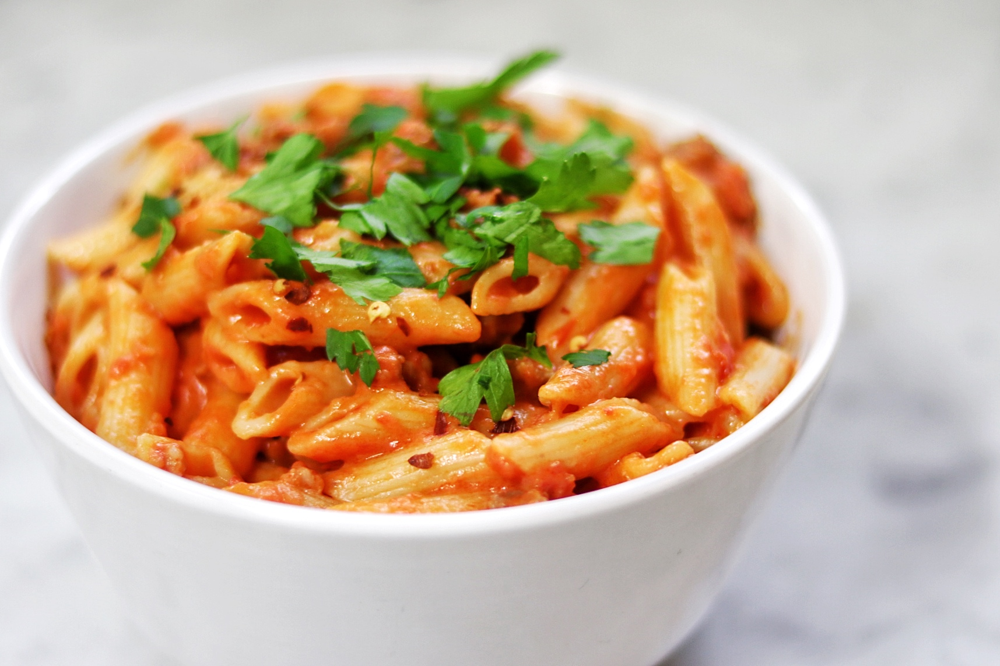

Spicy Vodka Pasta

Description
Bangin' creamy tomato sauce pasta with some kick.
Ingredients
- 1 pound uncooked penne pasta
- 1/4 cup extra virgin olive oil
- 4 cloves garlic, minced
- ½ teaspoon crushed red pepper flakes
- 1 (28 ounce) can crushed tomatoes
- ¾ teaspoon salt
- 2 tablespoons vodka
- ½ cup heavy whipping cream
- ¼ cup chopped fresh parsley
- 2 (3.5 ounce) links sweet Italian sausage
Steps
- "Bring a large pot of lightly salted water to a boil. Add pasta and cook for 8 to 10 minutes or until al dente; drain."
- "In large skillet, heat oil over moderate heat. Remove casing from sausage and add to skillet. Cook, breaking up the meat, until brown. Add garlic and red pepper and cook, stirring until garlic is golden brown."
- "Add tomatoes and salt; bring to boil. Reduce heat and simmer 15 minutes."
- "Add vodka and cream and bring to boil. Reduce heat to low and add pasta, toss for 1 minute. Stir in fresh parsley and serve!"